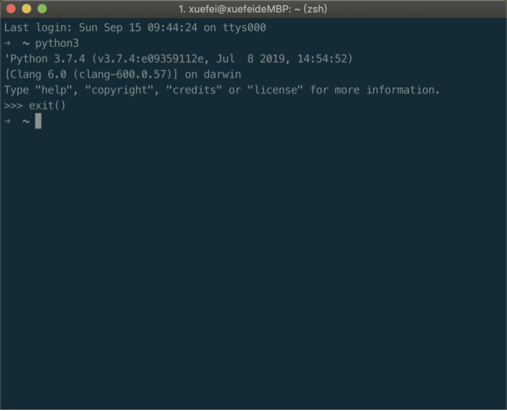

Python从入门到精通之环境搭建原文出处:本文由博客园博主续写丶相濡以沫提供。
原文连接:https://www.cnblogs.com/xuefei0812/p/11465861.html
本章内容：
- Windows系统环境搭建
- Linux系统环境搭建
- Mac OS系统环境搭建
一、下载python安装包
下载地址：https://www.python.org/downloads/
二、选择适合自己系统的文件，进行下载
Windows环境安装（Windows 10）
三、Python解释器的安装
-
双击python-3.7.4-amd64.exe文件，勾选Add Python 3.7 to PATH，点击自定义安装
Linux环境安装（Ubuntu）
macOS环境安装（10.14）
三、Python解释器的安装
-
python-3.7.4-macosx10.9.pkg
